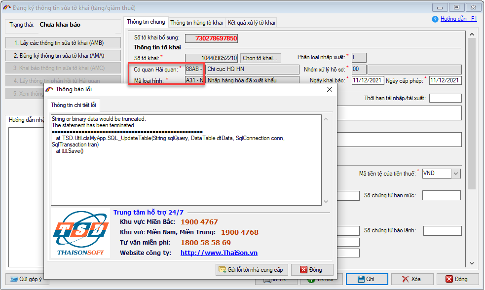
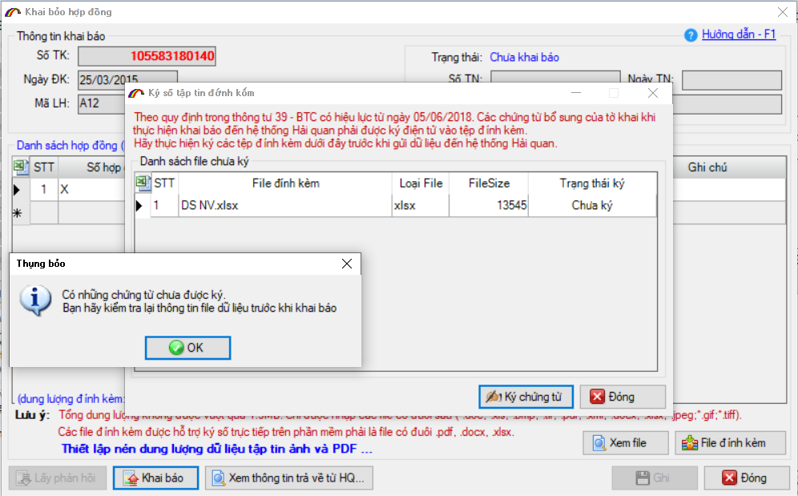
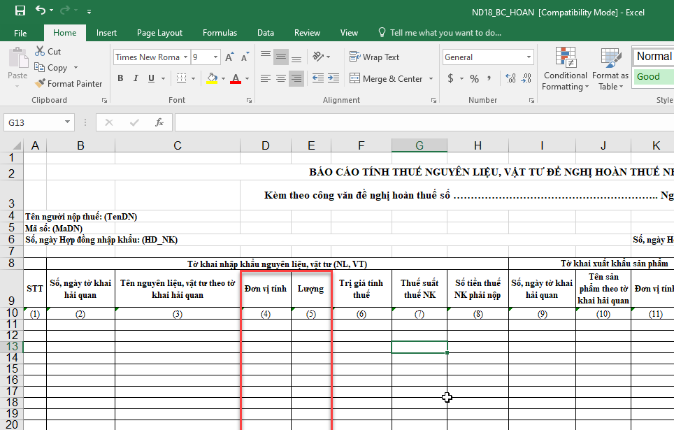
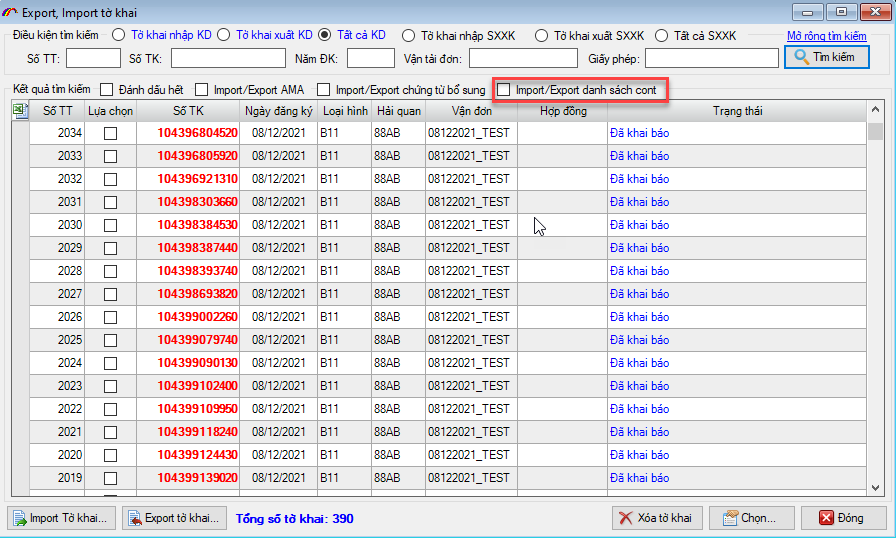

(Phiên bản update 26/11/2021)
Phần mềm ECUS5VNACCS2018 - Ngày phát hành 28/12/2021
Phiên bản cập nhật ngày 26/11/2021 được phát hành ngày 28/12/2021 bổ sung, sửa đổi các chức năng sau:
- 1. Sửa đổi bổ sung một số chức năng của nghiệp vụ AMA.
- 2. Sửa lỗi chức năng lưu trữ trực tuyến ECUS Drive.
- 3. Sửa lỗi ký số chứng từ đính kèm.
- 4. Sửa đổi mẫu in theo Nghị định 18 trong thanh lý SXXK.
- 5. Bổ sung chức năng Im/Export danh sách Cont của tờ khai trong chức năng Im/Export tờ khai.
- 6. Một số chức năng sửa đổi khác
- Sửa chức năng đăng ký gia hạn khi đại lý thực hiện gia hạn cho khách hàng. Khi đăng ký mua bản quyền, mua gia hạn load mã doanh nghiệp trên đơn hàng là mã đại lý sử dụng.
- Hiển thị tên gói bản quyền phần mềm, giá gói khi đăng ký mua bản quyền. Cho phép doanh nghiệp chỉ mua khách hàng, không cần mua máy khai báo mới. Doanh nghiệp cứ bổ sung mua khách hàng thì cấp bản BUSINESS
- Khi chạy phần mềm mà có sự chênh lệch phiên bản CSDL, cho phép người sử dụng tắt chương trình bằng cách click nút Cancel trên form cập nhật phiên bản CSDL.
- Sửa lỗi bản quyền module Kế toán kho. Doanh nghiệp đã có bản quyền kế toán kho nhưng khi sử dụng vẫn thông báo chưa có bản quyền
a) Sửa lỗi khi mở tờ khai AMA từ danh sách phần mềm load đồng thời Tên và Mã Hải quan; Tên và Mã Loại hình vào ô Mã dẫn đến lỗi khi ghi lại như hình sau:

b) Sửa lỗi đóng gói dấu ngăn cách thập phân trong phần tiền thuế. Cụ thể, khi đóng gói gửi lên Hải quan phần mềm sử dụng dấu , (phẩy) để ngăn cách phần lẻ thập phân theo đúng chuẩn của Hải quan.
c) Sửa lỗi IN tờ khai cho phần dấu ngăn cách thập phân trong phần tiền thuế. Cụ thể, khi in tờ khai AMA phần mềm sử dụng dấu , (phẩy) để ngăn cách phần lẻ thập phân theo đúng chuẩn của Hải quan.
Bản update sửa lỗi ECUSDrive không thể đăng nhập được (nhấn nút Đăng nhập không có sự kiện gì xảy ra)

Phiên bản cập nhật mới sửa lỗi không ký số được chứng từ đính kèm có định dạng .xlsx, .docx:

Thay đổi vị trí cột "Lượng" và "Đơn vị tính" của báo cáo hoàn thuế thanh lý SXXK, mẫu số 10 theo Nghị định 18, Sửa cột "Đơn vị tính" đứng trước cột "Lượng":

Trong form chức năng Import/Export tờ khai, bổ sung thêm lựa chọn import/export danh sách Container của các tờ khai đã chọn:

Ngoài ra phần mềm có sửa đổi, bổ sung một số chức năng khác sau đây:
Bản quyền © thuộc về Công ty TNHH Phát triển công nghệ Thái Sơn